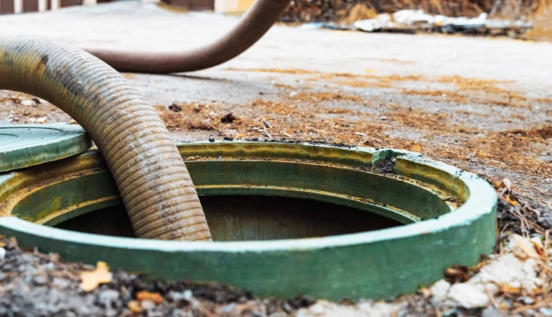

Event Planning
Porta Potty Guide for Downtown Killeen Events
Hosting an event downtown? Learn exactly how many portable restrooms you need to keep guests happy in the Texas heat.
From Fort Cavazos (formerly Fort Hood) infrastructure projects to community events at Killeen civic venues and military base operations throughout Bell County, FixPilot provides portable sanitation that meets federal, state, and local compliance requirements. OSHA-certified, ADA-accessible, and always delivered on time — same-day service available.
Skip the automated phone trees. Speak directly to our local Killeen dispatch team right now to secure sanitation for your site.
No forms. No callbacks. Talk to a real dispatcher right now and lock in delivery.
Not sure how many units? Use our free porta potty calculator.
From Harker Heights to Copperas Cove, we cover the entire Killeen metro.
Every unit is rigorously sanitized and pumped exactly on schedule, every week.
Whether you need one unit for a remodel or 50 for a military event, we have the stock.
Fully insured and strictly adherent to Texas environmental and health regulations.
When you need a portable toilet rental in Killeen, TX, you aren't just looking for a plastic box—you are looking for reliability, cleanliness, and compliance. Bell County is growing rapidly, from massive housing developments in Yowell Ranch to infrastructure upgrades around Fort Cavazos. This means the demand for high-quality, OSHA-compliant construction porta potty rentals has never been higher.
For contractors working in Central Texas, sanitation is a critical component of site safety and efficiency. We provide rugged, heavy-duty porta potties designed specifically for construction sites. Every long-term rental includes a strict weekly servicing schedule. This means our vacuum trucks arrive on time, every time, to evacuate waste, scrub the interior, and restock toilet paper and hand sanitizer. Whether you are managing a small home remodel in Trimmier Estates or a multi-acre commercial pour near Interstate 14, an affordable porta potty rental in Killeen CA (or rather, TX!) keeps your crew productive and your site up to Texas Commission on Environmental Quality (TCEQ) standards.
Planning an outdoor event, military ceremony, or a wedding? Standard units are great for casual gatherings, but for formal events, you need a luxury porta potty rental. Our luxury restroom trailers provide a climate-controlled, VIP experience that rivals a high-end hotel bathroom. Featuring flushing porcelain toilets, running water, vanity mirrors, and powerful air conditioning (essential for Killeen summers), these trailers ensure your guests are comfortable. We also provide specialized ADA-compliant portable toilet rentals for public festivals and gatherings to ensure everyone has safe, ground-level access.
Searching for "porta potty rental near me Killeen" yields many results, but working with a genuinely local dispatch team means you get faster delivery and no hidden fuel surcharges. Our logistics network covers all of Killeen and neighboring cities like Harker Heights, Copperas Cove, and Belton. In the event of an emergency—like a plumbing failure or a severe Central Texas storm—we can provide same-day porta potty rental in Killeen to get your property back on track immediately.
Ready to book your Killeen rental?
Our local dispatchers are standing by to calculate your exact needs.
Call →From large public works projects near Fort Cavazos (formerly Fort Hood) to city-sponsored events and military facility compliance requirements throughout Bell County, FixPilot provides portable sanitation that meets every specification. Our government-grade fleet is OSHA-certified, ADA-compliant, and available same-day across Killeen.

Heavy-duty construction units for Killeen job sites — serving Downtown Killeen, Fort Cavazos, and remote Bell County work sites. OSHA documentation provided on request. Same-day delivery available.

VIP trailers with A/C, granite countertops, and LED lighting for Killeen events near Fort Cavazos (formerly Fort Hood). Available with same-day delivery throughout Bell County and Fort Cavazos venues.

Affordable standard porta potties for Bell County construction crews and Killeen community events. Reliable, clean, on-time — serving Downtown Killeen, Fort Cavazos, and Harker Heights daily.

ADA and ANSI A117.1-compliant accessible units for Killeen public events and Bell County construction. Grab bars, wider doors, non-slip floors — required at any public-facing Downtown Killeen project.

Standalone hand wash stations for Killeen food events and Bell County construction near Fort Cavazos (formerly Fort Hood). Fresh water tank, soap, paper towels — essential for Downtown Killeen and Fort Cavazos events.

Premium flushable units for Bell County outdoor events: real flushing action, fresh water, mirror, interior lighting. Popular for Killeen events in Harker Heights and near Killeen-Fort Hood Regional Airport where standard units fall short.

Spacious Bell County event trailers: climate control, handicap-accessible stall, and premium fixtures. Same-day setup for Killeen festivals, Downtown Killeen concerts, and Killeen-Fort Hood Regional Airport outdoor events.

Designed specifically for multi-story commercial developments and bridge projects. These units feature integrated, heavy-duty steel slings allowing your crane operator to safely hoist sanitation directly to elevated floors, saving your crew massive amounts of time.

Five-star mobile restroom experience for Killeen black-tie events near Fort Cavazos (formerly Fort Hood). Premium flooring, fixtures, and lighting make this the obvious choice for Downtown Killeen and Fort Cavazos upscale events.

Upgraded Killeen units with interior lighting, larger tanks, and improved ventilation. A step above standard — ideal for Downtown Killeen events and multi-week Bell County construction projects.

Portable septic pumping for Bell County residential properties, Killeen event sites, and Harker Heights construction projects. Same-day emergency service — call (833) 652-9344.

24/7 emergency porta potty delivery throughout Killeen and Bell County. When a Downtown Killeen job site fails inspection or a Fort Cavazos event vendor cancels, we dispatch immediately — no premium for urgency.
Not sure what your site needs? Use this quick comparison guide to find the perfect sanitation solution for your guest count, event type, or job site size.
| Unit Type | Best For | Key Features | Capacity (Approx) |
|---|---|---|---|
| Standard Porta Potty | Construction, Casual Events, Parks | Ventilated, Urinal, Hand Sanitizer | 1 per 10 workers / 50 guests |
| Flushable VIP Unit | Corporate Picnics, Backyards | Foot-pump flush, Hidden Waste, Sink | 1 per 40 guests |
| ADA Compliant Unit | Public Festivals, Code Compliance | Ground level access, Grab bars, Oversized | Required 1 per 20 std. units |
| Luxury Trailer (2-10 Stalls) | Weddings, VIP Areas, Formals | A/C, Running Water, Porcelain Toilets, Lights | 150 - 800+ guests |
Still unsure? We can calculate exact numbers for you.
Call for Expert Sizing →Navigating Bell County and City of Killeen regulations is critical to avoid fines and project delays. Our logistics team handles the placement strategy to keep your site 100% legal.

We believe in transparent, upfront pricing with zero hidden fees. While exact costs fluctuate based on inventory and season, your rental price in Bell County is determined by three main factors:
A standard event unit is our most affordable option, while multi-stall luxury AC trailers command a premium. Bulk orders for large sites receive scaled pricing.
Event units are typically billed on a flat weekend rate. Construction rentals in Killeen are billed on a recurring 28-day cycle.
One cleaning per week is standard. For high-traffic sites where adding more units isn't physically possible, we can schedule twice-weekly or daily pumping.
Want an exact number for your project?
Call our local dispatchers. It takes less than 2 minutes to get a binding quote.
Call →
Texas weather dictates the event season. Here is our recommended timeline to secure inventory during peak months.
March-May & Sept-Nov. Book 4-6 weeks in advance. This is peak outdoor event season in Central Texas. Luxury trailers sell out fast.
June - August. Book 1-2 weeks in advance. Availability is high, but secure heat-resistant deodorization is mandatory.
Dec - Feb. Book 1 week in advance. Weather cools down and outdoor construction projects ramp up significantly.
Killeen is a dynamic Bell County community where construction activity, outdoor events, and residential growth create year-round demand for reliable portable sanitation. From the corridors near Fort Cavazos (formerly Fort Hood) to the neighborhoods of Downtown Killeen, Fort Cavazos, and Harker Heights, every part of Bell County has a reason to call FixPilot — construction sites, events, or emergency backup near Killeen-Fort Hood Regional Airport.
Our Killeen depot enables rapid same-day delivery to Downtown Killeen and all of Bell County.
Construction and event delivery to Fort Cavazos — same-day available throughout Bell County.
Serving Harker Heights residential and commercial projects with OSHA-certified units.
Luxury restroom trailers and standard units for events and construction in Copperas Cove.
Same-day delivery to Belton and all surrounding Bell County communities.
Serving contractors and event planners in Temple and throughout Bell County.
Reliable porta potty service to Lampasas, Downtown Killeen, and all of Bell County.
We also provide fast, reliable service to contractors and residents in these nearby Bell County communities:
*Prices may vary by duration and location in Bell County. Call for exact quote.
Get Your Free Killeen Quote2026 Rental Cost Guide
Standard, deluxe & luxury pricing explained
How Many Units Do You Need?
Calculate the right number for your event or site
OSHA Compliance Guide
Requirements for construction sites
Construction Site Services
OSHA-compliant units for job sites
Luxury Restroom Trailers
VIP-grade trailers for weddings & events
Free Quote Calculator
Get an instant estimate in 60 seconds
Killeen and Bell County represent a balanced portable sanitation market: neither purely construction-driven nor purely event-driven, but genuinely active in both. The Downtown Killeen commercial district and Fort Cavazos development corridor sustain construction demand. The Killeen-Fort Hood Regional Airport event venue zone and Harker Heights hospitality corridor drive event demand. Copperas Cove and Belton add the residential renovation market. FixPilot's Bell County inventory handles all three concurrently.
Construction near Fort Cavazos (formerly Fort Hood) represents Bell County's highest-complexity delivery environment. Projects along the Downtown Killeen corridor include high-rises requiring crane-hook units, mixed-use developments needing multiple access zones, and infrastructure work alongside active Killeen traffic. Our drivers know these sites, and our Bell County dispatch team coordinates with Downtown Killeen and Fort Cavazos site supervisors daily to ensure seamless delivery and service.
Killeen's event market has expanded with Bell County's population and economic growth. The Killeen-Fort Hood Regional Airport district, Harker Heights outdoor venues, Copperas Cove private event spaces, and the Downtown Killeen hospitality corridor now host events year-round that require professional portable sanitation management. Our Bell County luxury trailer fleet, ADA-compliant units, and event-servicing team exist because Killeen's event market demanded a vendor that could match the quality of the events being produced.
Killeen's Bell County construction market is driven primarily by military operations, government infrastructure, and public works centered around Fort Cavazos (formerly Fort Hood) and extending throughout the Downtown Killeen and Fort Cavazos development corridors. Active job sites in Harker Heights and Copperas Cove keep a consistent contractor workforce active in Bell County year-round, generating steady demand for OSHA-compliant portable restrooms with documented weekly service schedules. FixPilot maintains dedicated Bell County inventory to serve same-day construction deliveries to Downtown Killeen, Fort Cavazos, and every active construction zone in the Killeen metro. The Fort Cavazos (formerly Fort Hood) corridor represents the highest-demand construction zone in Bell County, where projects range from commercial mixed-use development to infrastructure upgrades along the Belton perimeter.
Killeen's event market is anchored by annual gatherings near Killeen-Fort Hood Regional Airport and throughout the Downtown Killeen and Harker Heights entertainment corridors in Bell County. The seasonal event calendar — outdoor concerts, community festivals, weddings at venues near Fort Cavazos (formerly Fort Hood), and Bell County civic gatherings — creates consistent premium portable sanitation demand from spring through fall. Luxury restroom trailers for upscale Fort Cavazos and Copperas Cove event venues, standard units for large Bell County community gatherings, and ADA-compliant options for public events near Killeen-Fort Hood Regional Airport are all part of FixPilot's Killeen event service offering. The growing outdoor wedding venue market in Belton and Harker Heights reflects Killeen's emergence as a destination for outdoor celebrations throughout Bell County.
Contractors working in Downtown Killeen, event planners organizing gatherings near Killeen-Fort Hood Regional Airport, and homeowners in Copperas Cove and Belton managing Killeen renovation projects choose FixPilot over competitors because our Bell County-based operation delivers local expertise that national vendors cannot provide. We know the delivery windows, access requirements, and permit procedures for construction sites near Fort Cavazos (formerly Fort Hood) and throughout the Fort Cavazos development corridor. Our Bell County dispatch team answers every call — no automated systems, no call centers routing your Killeen order through another state. Same-day delivery is standard, not a premium, for all of Bell County.
Crucial guides for event planning, base compliance, and construction regulations in Bell County.
Hosting an event downtown? Learn exactly how many portable restrooms you need to keep guests happy in the Texas heat.

Ensure your training event or base construction site meets all federal and local regulations for portable sanitation.

Planning an elegant outdoor wedding near Belton? See why climate-controlled luxury trailers provide the ultimate comfort.

Avoid fines on your commercial build. Learn exactly what OSHA demands for handwashing stations and sanitation capacity.
Porta Potty Rental in Georgetown
Learn More →Porta Potty Rental in Round Rock
Learn More →Porta Potty Rental in Round Rock
Learn More →Real feedback from contractors, event planners, and homeowners across Bell County.
Col. James H. (Ret.)
"Coordinating infrastructure work near Fort Cavazos (formerly Fort Hood). FixPilot had all the insurance certificates and OSHA documentation ready before the project even started."
Patricia W.
"Public works project at Downtown Killeen required ADA-compliant units with documentation. FixPilot delivered the compliance paperwork within 24 hours of request and kept units serviced through our 4-month timeline."
Frank O.
"Contracted FixPilot for a civic festival near Fort Cavazos (formerly Fort Hood) with 1,500 attendees. They handled permitting guidance, placement logistics, and daily servicing without any direction from our team."
Real answers for Killeen customers. More questions? Call (833) 652-9344 anytime.
We offer same-day delivery throughout Killeen and Bell County. Orders placed before 10 AM in Killeen typically arrive by early afternoon. Our Bell County fleet covers Downtown Killeen, Fort Cavazos, Harker Heights, and every active construction site and event venue in Killeen. For urgent needs in Copperas Cove or near Fort Cavazos (formerly Fort Hood), call (833) 652-9344 any time — a real Killeen-area dispatcher answers.
Our Bell County service area covers all of Killeen without exception — Downtown Killeen, Fort Cavazos, Harker Heights, Copperas Cove, Belton, and every community in between. We also serve adjacent counties when Bell County contractors and event planners need delivery beyond Killeen city limits. No service zone restrictions, no delivery zone surcharges for any Killeen address.
Federal OSHA 29 CFR 1926.51 requires one restroom per 20 workers per 8-hour shift at Killeen job sites. FixPilot provides OSHA compliance documentation automatically with every Bell County construction order — ratio calculations for your crew, service log templates, and positioning guidance for Downtown Killeen, Fort Cavazos, and Harker Heights project sites.
In Bell County, standard porta potties run $75–100/day with weekly service. Upgraded deluxe units are $100–150/day. ADA-compliant units for Killeen public events cost $120–160/day. Luxury restroom trailers for events near Fort Cavazos (formerly Fort Hood) or Killeen-Fort Hood Regional Airport start at $400/day. Multi-week Bell County construction contracts qualify for volume discounts. Call (833) 652-9344 for a precise Killeen project quote.
National chains route Bell County orders through centralized dispatch — meaning the person confirming your Killeen delivery has never driven Downtown Killeen or navigated Fort Cavazos's access restrictions. FixPilot has its own drivers in Bell County who run Killeen routes daily. Our units leave our Bell County facility clean and arrive on time. That local difference shows in every delivery, every week.
Yes — FixPilot's Bell County compliance package for government contracts includes: $2M GL certificate of insurance naming Killeen or Bell County as additional insured, OSHA 1926.51 compliance certification, ADA/ANSI A117.1 documentation for accessible units, and service logs formatted for Bell County government audit. We deliver this documentation package with the first delivery to any Killeen government project.
Yes — DOD and military facility delivery near Fort Cavazos (formerly Fort Hood) and throughout Bell County is handled with full access protocol coordination. We work with your contracting officer or base facilities contact for vehicle pass processing, delivery window confirmation, and OSHA documentation in DoD-preferred format. Our Killeen government division has navigated Bell County military base access requirements for years.
Yes — Bell County public infrastructure construction near Killeen-Fort Hood Regional Airport and throughout Downtown Killeen and Fort Cavazos requires the compliance documentation and service reliability that government contracts demand. FixPilot provides OSHA-certified units, insurance certificates, ADA compliance, and service logs meeting Bell County government audit standards. Delivery to any Killeen public works site is same-day.
Yes — civic events sponsored by Killeen and Bell County government near Fort Cavazos (formerly Fort Hood) and Killeen-Fort Hood Regional Airport are regular orders for our Killeen team. Public-gathering ADA requirements, health department service standards, and Bell County permit coordination are all part of our standard service for publicly-sponsored events in Downtown Killeen, Fort Cavazos, and throughout Bell County.
Yes — secure perimeter deliveries in Bell County including gated government facilities near Fort Cavazos (formerly Fort Hood), restricted construction zones in Downtown Killeen, and DOD installations near Fort Cavazos are handled with advance access coordination. Our Killeen drivers carry required credentials and the Bell County government division processes all security clearance requirements before dispatch. No last-minute access issues at any Killeen secured site.
Yes — projects and events near Fort Cavazos (formerly Fort Hood) are among our most regular Bell County deliveries. Our Killeen drivers know the delivery windows, vehicle access requirements, and site coordination protocols for the Fort Cavazos (formerly Fort Hood) area. Same-day delivery is standard for Bell County locations near Fort Cavazos (formerly Fort Hood) across Downtown Killeen and Fort Cavazos. Call (833) 652-9344 for immediate availability confirmation.
Killeen-Fort Hood Regional Airport and the surrounding Harker Heights corridor are a regular part of our Killeen service calendar. We've provided construction porta potties and luxury restroom trailers for events ranging from small private gatherings to large public events near Killeen-Fort Hood Regional Airport in Bell County. Delivery timing, access coordination, and permit guidance for Killeen-Fort Hood Regional Airport-area projects are handled by our Killeen team.
Our Killeen emergency line (833) 652-9344 is answered live 24/7 — including nights, weekends, and holidays. Our Bell County on-call driver covers Downtown Killeen, Fort Cavazos, Harker Heights, and the full Killeen metro for after-hours emergencies. Whether it's a Fort Cavazos (formerly Fort Hood)-area construction inspection failure or a last-minute event backup in Copperas Cove, we dispatch immediately with no premium for after-hours service.